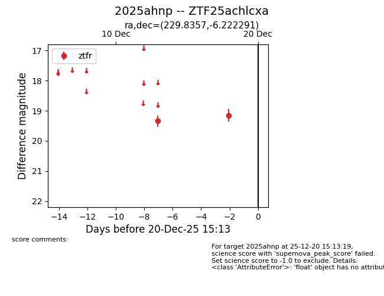
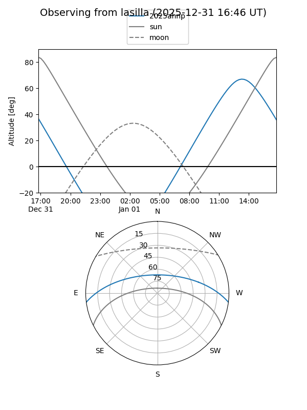
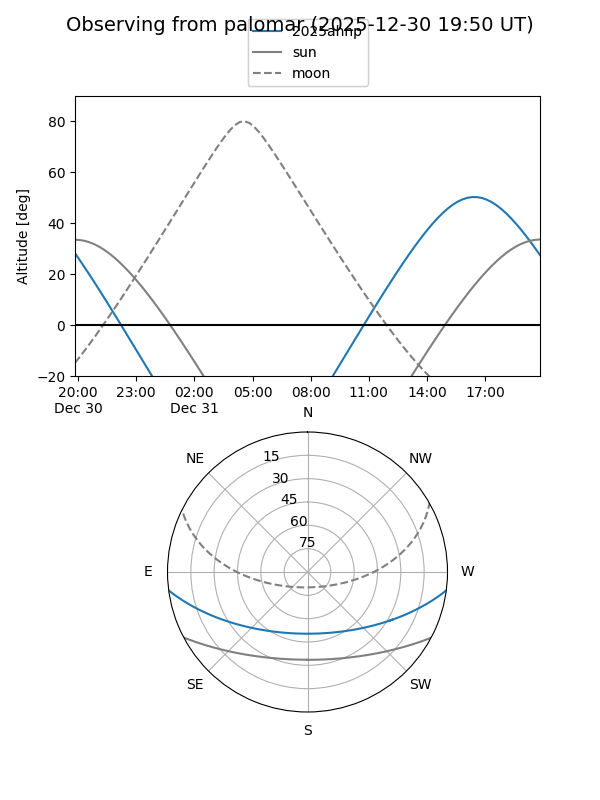

2025ahnp
Target 2025ahnp at 2025-12-20 16:25
Aliases and brokers:
FINK: fink-portal.org/ZTF25achlcxa
Lasair: lasair-ztf.lsst.ac.uk/objects/ZTF25achlcxa
ALeRCE: alerce.online/object/ZTF25achlcxa
TNS: wis-tns.org/object/2025ahnp
YSE: ziggy.ucolick.org/yse/transient_detail/2025ahnp
alt names
ZTF25achlcxa (ztf,fink_ztf)
2025ahnp (tns,yse)
Coordinates:
equatorial (ra, dec) = 229.8357,-6.22229
equatorial (HMS+DMS) = 15:19:20.56,-06:13:20.25
galactic (l, b) = (355.4452,+41.10094)
Flags:
Photometry:
last ztfr=19.15
2 ztfr detections
Lightcurve

Visibility


Additional plots